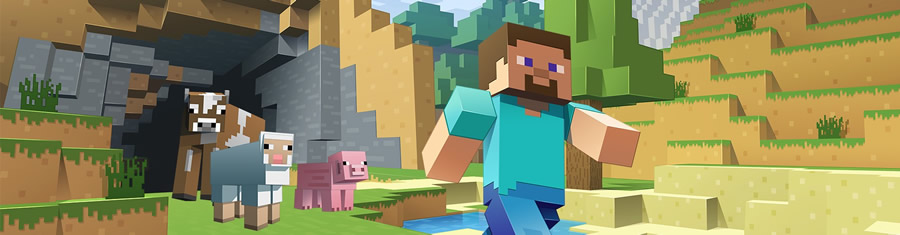

 當個創世神《當個創世神》（英語：Minecraft，中國大陸譯作「我的世界」，在中國大陸俗稱MC）是一款沙盒遊戲，最初由瑞典遊戲設計師馬庫斯·阿列克謝·泊松（別名Notch）單獨開發，隨後由2009年成立的瑞典公司Mojang開發並發行。玩家可以在一個隨機生成的3D世界內，以帶材質貼圖的立方體為基礎進行遊戲。遊戲中的其他特色包括探索世界、採集資源、合成物品及生存冒險等。遊戲有多種模式，生存模式中玩家必須維持生命並採集資源來打造自己的世界；創造模式中玩家擁有無限的資源並可飛行，大多數玩家會使用此模式來建造大型建築；冒險模式中玩家可在其他玩家客製化的地圖中遊玩。遊戲的Java版以其強大的第三方拓展模組（mod）而知名，它們可為遊戲添加各種新的物件、角色和功能。 遊戲PC平台（目前稱為Java平台）的Alpha版本在2010年6月30日公開發布，經逐步更新後正式版本於2011年11月18日發布，目前版本已達1.15.2(最新候選版本為1.16-rc1)。Android版和iOS版分別於2011年10月7日及11月17日發售。2012年5月9日，Mojang透過Xbox Live Arcade向Xbox 360用戶發售，而2013年12月17日及2014年9月4日，亦先後登入PlayStation 3、PlayStation 4平台，緊接著同年9月5日發布Xbox One版本，Playstation Vita版本亦於2014年10月14日起開售。同年10月10日，Windows Phone版本亦開始銷售。2015年12月17日發售Wii U版本。所有版本的當個創世神都將享受定期更新。遊戲的主機版與4J Studios合作開發。 《當個創世神》獲得業界的一致好評，贏得眾多獎項和榮譽。2014年9月，微軟公司宣布以25億美金收購Mojang及遊戲的智慧財產權，收購於兩個月後完成。2016年5月，網易宣布代理《當個創世神》中國版，2017年8月開啟公測。 2019年5月，《當個創世神》在各平台上總銷量超過1億7600萬，打破《俄羅斯方塊》的1億7000萬總銷量使其成為有史以來最暢銷的電子遊戲。 |